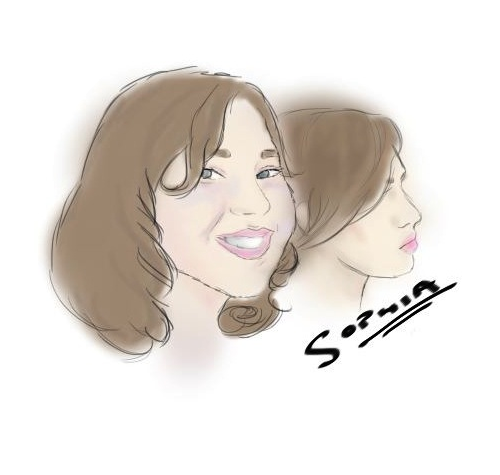

Congratulations!
You've found my blog.
Hooray.
Here, I post stuff. Like when animations are coming out.
And if you can give me ideas for animations.
And blah blah blah.
P.S. If it ever gets a little bit hard to read because the text is over the sunflowers, just scroll. I
made it so that the background doesn't move but the words do. I would claim I'm such
a genius for doing it, but that would be taking somebody else's credit. Thank you, random person who
let me copy your code!
Click here to read MY LATEST POST.
(You can also just scroll down. I find that boring, but if you want to, go ahead.)
February 20th
OK! I deleted and ReDID EVERYTHING! And it still sucks! How's that for motivation!
I don't know what's going to happen on my webpage. So you should all tell me.
February 22th
Today is John Page's Birthday! So I felt like mentioning that. And after yesterday's
'Cliffhanger' on Glee, I felt the need to start writing a script for a video called
"Why Glee is Stupid". If you want to see the link, I will be putting it on the homepage,
and feel free to read it, and or comment on it. I also need to find people willing to
come into TOWN with me and pretend to sing while someone films and people on the street
stare at us funny. So if anyone wants to, again just lemme know. And I think that's about all that
we really need to know right now.
So there's my status update for you.
February 23th
I am SINGLE.
So there's my status update for you.
Just kidding, I thought that would be a funnier 'status' to leave. Guess not.
Speaking of being single, why does everyone care so much? Sure, I have a crush on a guy too,
but I don't focus on the fact that we're both single, otherwise I'd probably go insane!
Everyone I know seems to talk about it like the world's going to end (When that happens, give
me a call, I'll be sleeping.) Achieving a boyfriend/girlfriend is great, but does it really matter?
In some ways I think it could be worse! That's just how I see these things. What do you think? Does it bug you?
February 24th
Break's ALMOST OVER!!!
So there's my status update for you.
God, and just when I was starting to get readjusted to sleep!
This really sucks. Now I will have to go back to waking up early, eating s***ty food
during last lunch, and not be able to drink gallons of soup. Plus now we have to worry about
...FINALS. Crap.
This SUCKS. Balls, eggs, weiner. All of them.
P.S. I want this:
Adorable BIKINI (Present for me?)
February 25th
God I hate homework.
So there's my status update for you.
I don't want to go back! Please don't make me go back? Why?! Why do I have to wake up early?!
Hey what's up you guys? Are you ready for school?
Oh, P.S. I'm going to have a newsletter come out to say when my website has
been majorly updated. It'll come out every once and a while, so you just have to check when
you want. It's all up to you when you check. If you want to get the newsletter, just email me
at sophia.alexandra.berger@gmail.com with the heading "Newsletter" and I'll put you in
my list.
February 26th
It is THE LAST day of break.
So there's my status update for you.
I... am just so saddened by this fact. Why? Why does this have to be? It makes me sad.
...So sad.
February 28th
Man I miss vacation. I want to go back in time!!! But I normally want that, so... nevermind.
I think I have animator's block. that is, I have writer's block, but it has to do with animating...
but also writing. Actually, I guess that would be two things. Oh well.
I need to get out into the sun more. I look like a pale vampire. Romy is running now that the
swim season is over, which probably would be a good habit for me to get (back) into.
The thing is, if running a mile has to leave me panting after twelve long minutes, something
is not correct in the situation. It's great for your abs, and all the guys that run are hot,
but it just doesn't seem to work for me.
The fact that I trip a lot doesn't help my case.
I want to do it... oh well. We'll see what happens.
What else is new? Oh, yeah! The trimester is almost OVER! How did that happen?
It leaves with mixed feelings. I look forward to cooking and AV Tech, but at the same
time I don't really want to go have Geometry and World Civ. Honors. That is
going to suck.
Well, I guess we'll see what happens. Maybe I'll lose weight, get a boyfriend, and
get more subscriptions on my YouTube channel. Or maybe I won't.
I don't know. I like a guy, and if he (by some miracle) hasn't yet figured out from me
staring at him all the time, Facebook might start notifying people someday and he'll realize
just how often I visit his Facebook page. And then he'll get really creeped out.
Dear GOD I hope that never happens.
In love and hopeless,
There's my status update for you.
March 3rd
I climbed the rockwall. It was scary.
next week I have to climb the giant ladder. I have a suspicion it was actually designed for giants.
At least it will be easier. Right?...
What else is new? Oh yeah. I could've gone to Guatemala. That's a pain.
From now on, if I want to go on a trip, I should actually ask if I could go.
Which leads me to wonder how Gabe managed to go.
Oh well. Maybe next year.
That's my status update for you. You probably already knew that.
Now I'm going to get angry at my computer for not letting me register for 10th grade.
Sigh.
I wonder if there's a party i'm missing right now.
April 16th
Jesus I've been gone for a while. Funny how nothing happens when I'm gone.
So... Let's see what I've failed to notify you about.
I passed Gym? I guess that's the only really 'exciting' thing that's happened. I got really excited about
the new trimester, only to see that (shocker) I DID NOT have any classes with that guy I like. If you really don't know
who I am talking about. That's probably a good thing. It also probably does not say much about your intelligence level. I'm not saying you're stupid, I'm just saying that
it's relatively easy to figure out who I like. The first hint is that I have a TERRIBLE staring problem. I only say this because of how I've noticed that I can get
someone really nervous when they are giving a speech and I am actually paying attention to said speech. (Sorry, Ms. Cocco) There was a hint somewhere in that last sentence. Another hint is that
if you pay enough attention to the people on Facebook who I'm friends with, you'll notice that of the guys I am friends with, besides the ones who are on the 'only friends' list, or who are related to me in some way, there's maybe
ten guys. Now if you take out the stalker (you know who you are) and the people who I DON'T KNOW, you get (if you're really good at math) one person.
last hint? I hate his team. (Use your brain. It's a soccer reference.) If you have any clue, my team is Barça, or FC Barcelona. Sort of a duh. And what is Barça's biggest rival? The name also contains Barcelona's biggest political rival.
If you STILL don't know, use the friggin' internet.
I think that should be enough to guess.
and if you are him (Yeah, RIGHT) I really hope you don't hate me.
I'm Sophia Berger, and this has been Weekend Update! Hee hee.
>
May 28th
Well then. Haven't written much here...
So, I am really clueless. Maybe, since I know for a fact nobody visits this website, I should delete it.
Nah.
Well, if you did read this. You would know that I am lazy. If anyone reads this, they could make my life a living hell.
However, I have no desire to take it down yet.
Anyways, I made this:

I like the way it turned out. What do you think, imaginary readers? Please, tell me what you think.
Yes...I'm Insane.
On that gloomy note, BYE.
March16th, Saturday, 2013
Have you missed me?
That's right, I REMEMBERED MY SFTP USERNAME! So now I can write on my blog again. Huzzah
To recap on my life: I'm done with health, I've made more cartoons, which I currently can't show you. I've written a play, which I
am waiting and hoping for to be in the Student Written Play Festival, I acted in Briefs, I made a movie that got into the
YouthFilm Fest of this year, I apparently became attractive to boys all of a sudden AND I got a dude who touched my ass permanently
kicked out of a contradancing place. I'm also doing really well, grade-wise, and I might go to a science camp.
In other news, I have a new camera. It's HD.
So now all I need to do is get money to hire actors. Sam said he would. I love Sam.
Peace out for now, homeskillets. I'm biking to town with Ben later.
CLICK ME TO READ THE SCRIPT FOR MY PLAY.
Sophia
March 30th, Saturday, 2013
O.K. My student Written play didn't make it.
Not gonna lie; it sucks. However, it isn't the end of the world.
I'm trying to think up a new cartoon for the Graphic, but I haven't quite gotten a punchline yet.
In the mean time, I've got some momentum in terms of filming.
I've added some film projects to my "resume." I'm really hoping that if I do something so impressive, so innovative that
a film school thinks I deserve a scholarship, I could go and I wouldn't have to have mom and dad pay.
In a perfect world, that would be a Harvard scholarship, but it's not a perfect world. I've gotten more that one B in my high school career.
I'm not the captain of the swim team. I'm not a legacy. I'm not from a poor neighborhood, top of my class.
I'm just that one girl who wants things she couldn't possibly have.
That said, I'm definitely trying to do everything I can to get into somewhere like Harvard.
I just don't think I'm going to be the one kid from the school who goes.
In the mean time, I can only hope.
Signing off for Hurricane Headlines, I'm Sophia Berger.
June 24th, Monday, 2013
So, I should have mentioned this before now...
I got INTO a Student Writtens Play.
Not gonna lie; it sucked. Like, it was SHIT.
Synopsis: girl walks into library and annoys a boy for some reason. He is a douche in response.
badly hidden attempt at depth toward the end through girl's description of the meaning of life,
boy proposes sex, and INSTEAD OF REACTING LIKE ANY ACTUAL GIRL WOULD, she agrees.
As you might have guessed, I was that girl.
I'm only annoyed because of how bad the play was. In the link a couple of posts up, I posted the link to the
PLAY I WROTE.
If you want to read this play's script,
CLICK ME! Once you've read it, please explain to me how I'm crazy and how the play is actually genius.
If you want to know the author of said delightful play, it was
DUNCAN CROWLEY.
If you go to my school, you may know either him or his much-more-wonderful sister,
LINDY.
Speaking of whom, I might add, she felt the play was "...interesting."
I'm glad that I convinced my parents not to see it.
In terms of other developments in my life, I have won and Academic Achievement award
in Technology Education, edited, directed and/or filmed two short movies, and acted in two plays total this year.
I also have now finished two years of cartooning for the high school newspaper, as well as
become the President of the Debate Team.
(I know. I'm shocked about that last one too.)
My grades weren't fabulous... I got more than one B. Hopefully my chances at life aren't over.
I'm writing a new script. It's about time travel. Hopefully, I will get it filmed at some point soon.
Other than that, I'm no different, really. Same old dork who wears nerd glasses for fun.
Anywhoo, I'm off to Florida soon. Remind me to not talk about politics, religion, or sun tans.
I might update this. I might not.
Signing off for Hurricane Headlines (oh yeah, I designed the graphics for two shows that we aired)
I'm Sophia Berger.
June 25th, Tuesday, 2013
Well, I guess I have more free time than I thought. I'm going to make some animation soon. But what? I don't know.
Part of me still feels like I'm going to have school soon. I want to kill that feeling.
I want to kill it with fire.
That's all for today, folks.
-Sophie
August 6th, Tuesday, 2013
Hey everyone! I'm in Washington now. It's super fun and exciting and filled with sushi and thrift shopping.
I think Washington is the Amherst of America. What's that, you say? Amherst is in America? Well, then.
I have done most of my AP Bio work and roughly none of my Spanish work. WHOOT WHOOT! That will end badly. But for now I'm going to camp and working for Squug.
The only real change in my life is that I started watching Sherlock. That was a mistake. A wonderfully stupid mistake.
That's all for now.
Sophia Berger
January 31st, 2016
Jesus. It's been a long time.
What's new? Oh, the usual. I graduated high school and I finished my first semester in college. No biggie.
Oh gosh, looking back so much had happened from the last time I posted on here. For starters, got over my crush on Gabe... yikes.
Unfortunately, that was resolved by developing a crush on Dick Headdessy, as we call him now.
But it's fine now! I'm not in the high school anymore so that's not an issue. Hooray for being an adult!
Not sure what else has happened in my life. I bought some socks. That was nice.
There was a cute boy in my art class but I'm pretty sure that's not a good setup for anything.
I don't know. Right now I'm just putting off doing homework. Tomorrow I'm going to learn about linked lists and I'm going to do the work
and it's going to be good! (She prayed.)
It's only the intense fear of failure that motivates me, anyways.
Anyways, I should go reattempt it. You only learn through practice, eh?
Sorry if I don't update this for another three years. If I get married I'll let you know.
Besides, we all know no one is reading this. Sighs.
Sophia Berger.